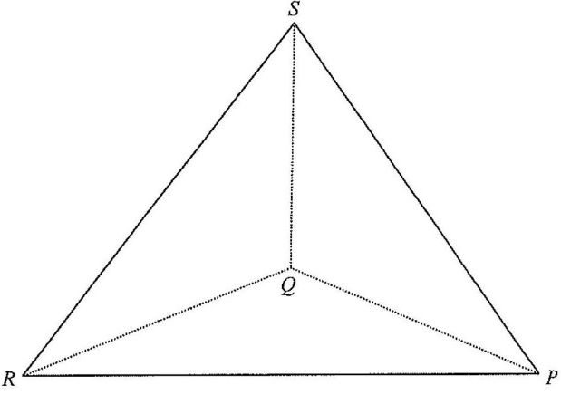

[2024 MC #40] In the figure, the base \(PQR\) of the tetrahedron \(PQRS\) lies on the horizontal ground. It is given that \(Q\) is vertically below \(S\). If \(\angle PQR = 90^\circ\), \(\angle QPS = 30^\circ\) and \(\angle QRS = 45^\circ\), then \(\cos\angle PRS =\) ?

Let the vertical height be \(SQ = h\). Since \(SQ\) is perpendicular to the horizontal ground, \(SQ \perp PQ\) and \(SQ \perp RQ\).
So \(\triangle SQR\) and \(\triangle SQP\) are both right-angled at \(Q\).
In right triangle \(SQR\), taking the angle at \(R\): \[ \tan\angle QRS = \frac{SQ}{RQ} \] \[ \tan 45^\circ = \frac{h}{RQ} = 1 \quad\Rightarrow\quad RQ = h \]
In right triangle \(SQP\), taking the angle at \(P\): \[ \tan\angle QPS = \frac{SQ}{PQ} \] \[ \tan 30^\circ = \frac{h}{PQ} \quad\Rightarrow\quad PQ = \frac{h}{\tan 30^\circ} = \sqrt{3}\,h \]
Since \(\angle PQR=90^\circ\), \[ PR^2 = PQ^2 + RQ^2 = (\sqrt{3}h)^2 + h^2 = 4h^2 \quad\Rightarrow\quad PR = 2h. \]
Classic \(30^\circ\!-\!60^\circ\!-\!90^\circ\) and \(45^\circ\!-\!45^\circ\!-\!90^\circ\) triangles.
From \(\triangle SQP\): \(\sin 30^\circ = \dfrac{SQ}{PS} \;\Rightarrow\; PS = \dfrac{h}{\sin 30^\circ} = 2h\).
From \(\triangle SQR\): \(\sin 45^\circ = \dfrac{SQ}{RS} \;\Rightarrow\; RS = \dfrac{h}{\sin 45^\circ} = \sqrt{2}\,h\).
In \(\triangle PRS\) with sides \(PS = 2h\), \(RS = \sqrt{2}h\), \(PR = 2h\): \[ \cos\angle PRS = \frac{RS^2 + PR^2 - PS^2}{2 \cdot RS \cdot PR} = \frac{(\sqrt2 h)^2 + (2h)^2 - (2h)^2}{2(\sqrt2 h)(2h)} \]
\[ = \frac{2h^2}{4\sqrt2\,h^2} = \frac{1}{2\sqrt2} = \frac{\sqrt2}{4} \]
Equivalently, using \(PS^2 = PR^2 + RS^2 - 2(PR)(RS)\cos\angle PRS\): \[ (2h)^2 = (2h)^2 + (\sqrt2 h)^2 - 2(2h)(\sqrt2 h)\cos\angle PRS \] \[ 4h^2 = 4h^2 + 2h^2 - 4\sqrt2\,h^2 \cos\angle PRS \] \[ 4\sqrt2\,h^2\cos\angle PRS = 2h^2 \;\Rightarrow\; \cos\angle PRS = \frac{1}{2\sqrt2} = \frac{\sqrt2}{4} \]